A mobile focus app centered around meditative and productivity-enhancing features, designed to help students and professionals stay focused and manage distractions.
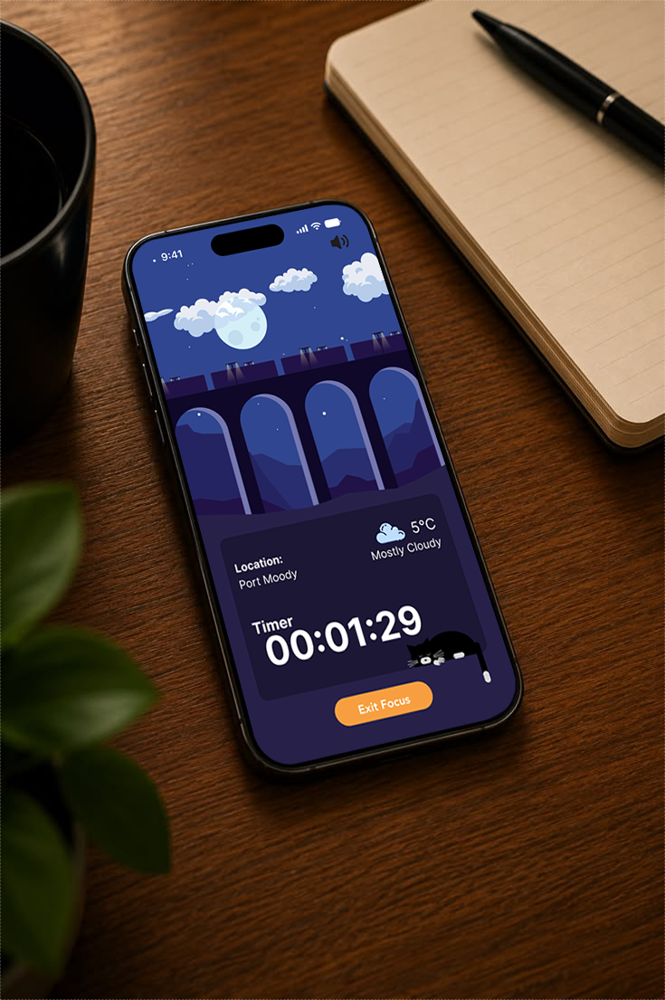
Most focus timers are a number counting down on a blank screen. They work, but they feel like a chore, and they don't give you any reason to keep the app open instead of switching to something else.
How might we make focusing feel like a calm, immersive experience instead of a countdown, while still keeping people accountable?
The screen should be pleasant to glance at, but never so busy it pulls attention from the task.
The scene should reflect your environment (your time of day, your weather) so it feels personal and present.
Nudge users when they drift, without punishing them.
I chose a train ride as the core metaphor. A train has a clear start and destination, it moves forward steadily, and looking out the window is a naturally calming, low-effort activity. That matches what a focus session should feel like.
Once I had the metaphor, I carried it through the whole app so every feature had a matching meaning:
| Focus concept | OnTrack equivalent |
|---|---|
| Starting a focus session | Starting a ride |
| User account / profile | OnTrack Pass (train card) |
| Session summary | Ride ticket |
| Session log | Ride History |
| Getting distracted | Going off track → “Get back on track” |
Keeping the metaphor consistent gave the app a voice and made the UI copy almost write itself, from the “Start Ride” button to the barcode on the summary ticket.
Much of my planning focused on how the ride itself should feel, before designing any individual screen.
I sketched and weighed several directions for the focus screen:
I mapped the core journey early: Home → input focus time → Focus → Warning → Focus Summary → Focus History. The first prototype was greyscale on purpose, so I could test the flow and the accelerometer warning before committing to visuals.
My first version of the dynamic environment was simple: a single sun that changed colour by time of day (yellow, blue, black). It proved the logic worked, but it didn't feel like morning or night. That gap pushed me toward fully illustrated scenes for each time of day.
Instead of one static background, every ride is built from three layers that respond to the user's real environment and preferences. Together they turn a timer into a place you sit in for an hour.
The scene follows your local clock. Morning is soft pink, day is warm yellow, evening is coral sunset, and night is navy under the moon. If you study at 11pm, the train crosses a night sky; at 8am, it rides into the sunrise. The app always feels like it's in the same moment you are.
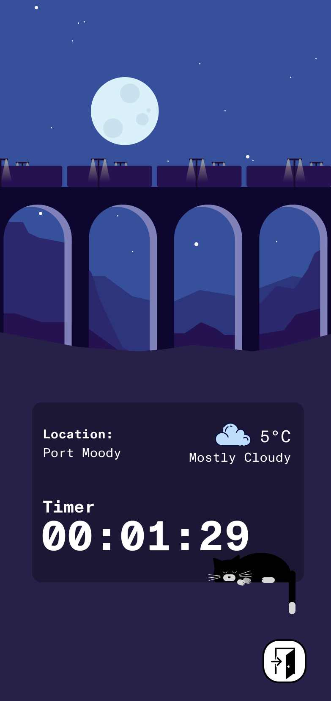
Try it: pick a time of day
Showing the Night scene.
Using your location and live weather data, the scene adds animated rain, drifting clouds, falling snow, or lightning. If it's raining outside your window, it's raining in OnTrack too. This small detail grounds the experience in the real world and makes each ride feel different.
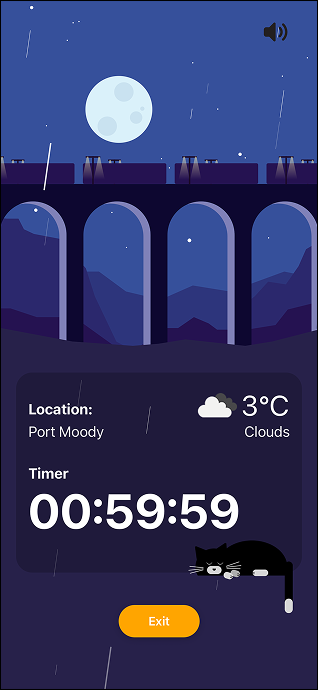
Rain
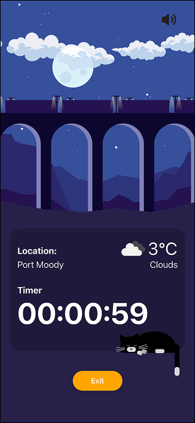
Clouds
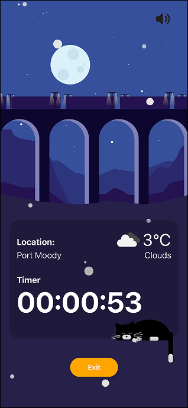
Snow
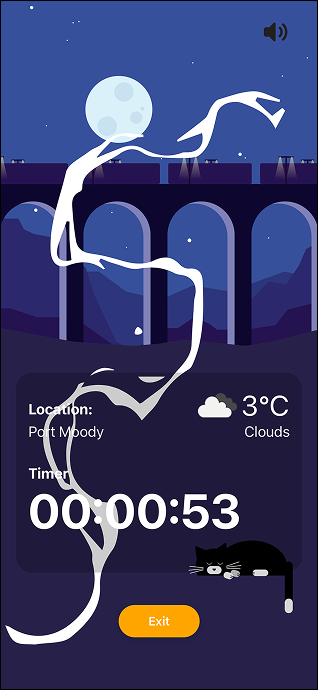
Lightning
Users can choose calm background noise, or switch to their own Spotify music. I designed the sound options to be ambient and non-lyrical by default, so they mask distractions without competing for attention.
Sound settings live in two places: in General Settings (next to the OnTrack Pass), and inside the focus screen via the speaker icon, so users can adjust mid-ride without leaving.
Makes the experience feel present.
Makes it feel personal and real.
Makes it calming and blocks out the room around you.
Because the layers are independent, they combine: a snowy evening with waves is a completely different ride from a sunny afternoon with the train. That gives dozens of combinations from a small set of assets.
I wanted OnTrack to feel like a quiet night-train postcard: flat illustration, soft geometry, and a limited palette. The core palette is deep navy and indigo, warm cream, and a single orange accent for actions, so the interactive elements always stand out against the scenery.
#36509B#251251#FFF9E2#F79F40I illustrated the same viaduct scene in four palettes, each mapped to the user's local time. Every scene uses the same layer structure (sky, sun or moon, viaduct, mountains, ground, train, and info card), so only the colours and the celestial body change. This made the system easy to extend and easy to animate.
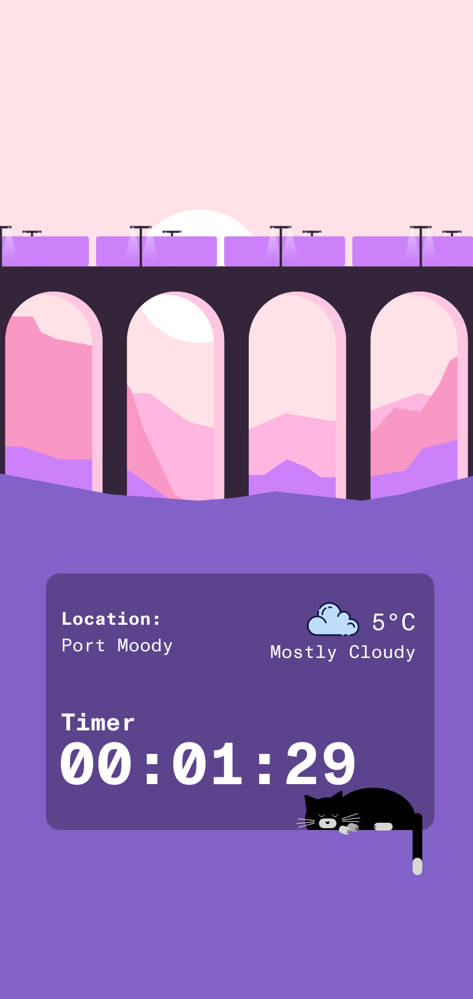
Morning5am–10am
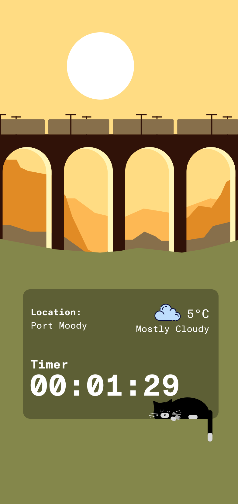
Afternoon10am–5pm
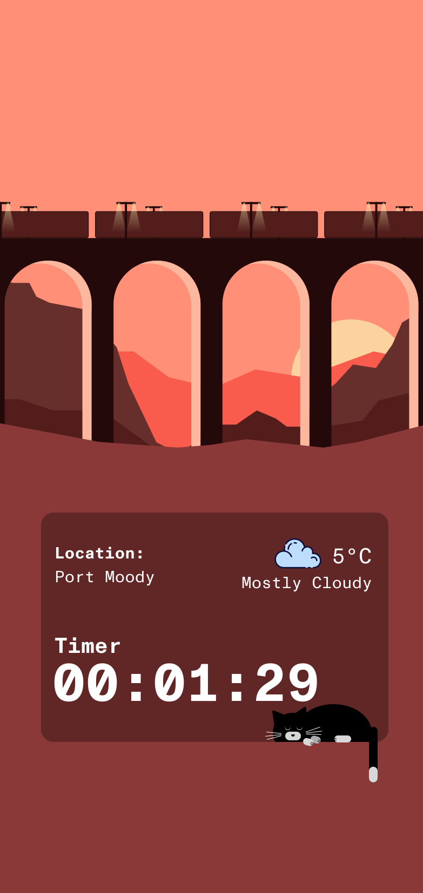
Evening5pm–8pm
Night8pm–5am
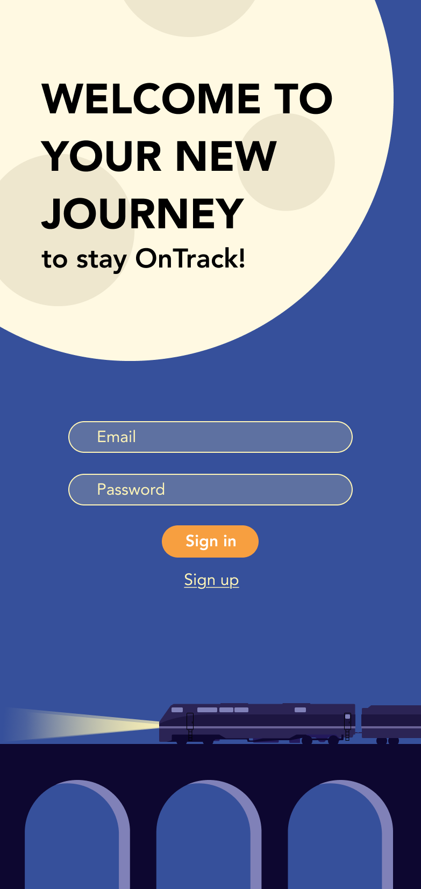
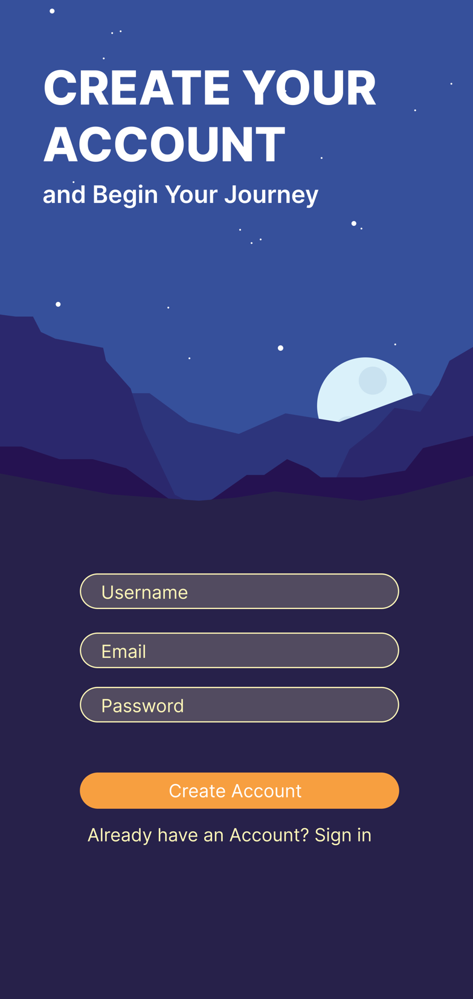
I wanted the illustrations to be live, not flat images, so they could change with the time of day and layer weather on top.
Every scene built as components with consistent, named layers.
A Figma-to-code plugin turned components into React Native SVG, which I cleaned up so each layer could be styled and swapped by props.
determineTimeOfDay() reads the device's hour and picks the matching palette.
Lottie JSON animations loop over the scene for the whole ride.
const determineTimeOfDay = () => {
const hour = new Date().getHours();
if (hour >= 5 && hour < 10) return "morning";
if (hour >= 10 && hour < 17) return "day";
if (hour >= 17 && hour < 20) return "evening";
return "night";
};Because the scene is code and not a static image, adding a fifth time of day or a new weather state only takes a new palette or one more Lottie file. No screens need to be redrawn.
OnTrack was built in React Native with Expo, using several native device features to make the experience aware of its surroundings.
const fetchWeather = async () => {
setLoading(true);
const location = await getLocation();
if (!location) {
setError("Unable to get location");
setLoading(false);
return;
}
const { latitude, longitude } = location || { latitude: 43.7, longitude: -79.4 };
try {
const response = await fetch(
`https://api.openweathermap.org/data/2.5/weather?lat=${latitude}&lon=${longitude}&appid=${weatherKey}`
);
const data = await response.json();
// If weather exists, get weather data
if (data.weather) {
setWeather(data.weather); // condition (e.g. rain, cloudy)
setWeatherCity(data.name); // city
setTempC(Math.round(data.main.temp - 273.15)); // Kelvin → Celsius
} else {
setError("No weather station nearby. Try again later.");
}
} catch (e) {
setError(e.message || "Failed to fetch weather");
} finally {
setLoading(false);
}
};// Map each OpenWeather condition to a Lottie overlay
const weatherAnimations = {
Drizzle: RainAnimation, Rain: RainAnimation, Snow: SnowAnimation,
Clouds: CloudsAnimation, Thunderstorm: LightningAnimation,
};
{weather && weather[0]?.main && weatherAnimations[weather[0].main] && (
<LottieView
source={weatherAnimations[weather[0].main]}
autoPlay
loop
resizeMode={weather[0].main === "Clouds" ? "contain" : "cover"}
pointerEvents="none"
style={weather[0].main === "Clouds"
? styles.cloudConditionContainer
: styles.weatherConditionContainer}
/>
)}
Clouds use contain so they sit in the sky; rain, snow,
and lightning use cover to fill the whole screen.
pointerEvents="none" keeps the overlay from blocking
the timer and buttons underneath.
Using expo-sensors, the app calculates total movement across x, y, and z. If movement stays above a threshold for more than 5 seconds, the user gets a “Get back on track” alert. If movement drops below the threshold for 1 second, the timer resets. This means a quick adjustment of the phone doesn't trigger a warning, but picking it up to scroll does.
Key actions like navigating and starting or ending a ride trigger medium haptic feedback, so the interface feels physical and responsive.
Users can connect Spotify and control playback (play, pause, skip) from the focus screen, with the current album art shown live.
Static exports couldn't change with time or weather. Converting Figma components to SVG code solved it, but the plugin output needed cleanup before each layer could be styled and swapped by props.
An early version warned users too often. I added a time window (5 seconds of sustained movement) and a reset window (1 second of stillness) so the nudge feels fair instead of nagging.
Native SDKs weren't available, so Spotify authentication had to run through Expo AuthSession, and redirect URIs changed with every Wi-Fi network until the team switched to a stable localhost URI. A standalone build would remove most of these constraints.
This project showed me that immersion is a design decision, not decoration. Every visual choice had to support focus. The scene needed to be calm enough to sit in your peripheral vision, and responsive enough to feel alive. Owning both the illustrations and the code that drives them meant I could design for what was technically possible from day one.